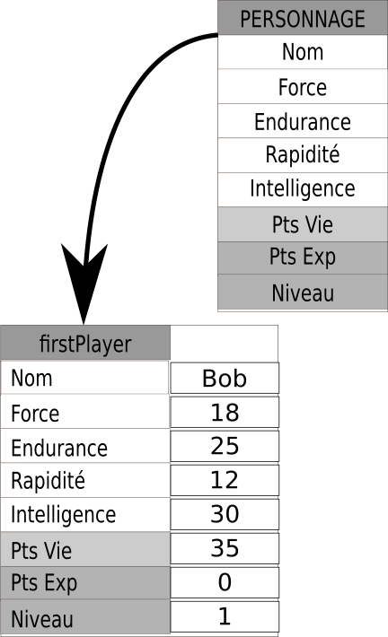

Introduction à la programmation orientée objet
Un premier exemple issu de Scratch
Observons ce jeu assez minable en Scratch (non, mais vraiment, allez voir sur le site...).
Le lien ici
Ce jeu sommaire est construit autour de trois éléments :
- la chauve-souris ;
- l'éclair ;
- le chat.
Chacun de ces trois éléments possède :
- sa propre zone de script;
- ses propres caractéristiques (nom, taille, costumes, position de départ, orientation...).
Et ces trois éléments réagissent en fonction d'événements liés soit à l'action du joueur, soit à leurs propres interactions.
L'éclair et le chat ont la possibilité d'exister sous la forme de clones, chacun des clones ayant ses propres caractéristiques bien que partageant le même comportement.
Aussi simpliste que Scratch paraisse, il n'en est néanmoins pas un véritable langage de programmation, qui plus est multiparadigme : il est en effet conçu pour gérer la programmation impérative, la programmation orientée objet ainsi que la programmation évènementielle.
Paradigmes de programmation
Un paradigme est « une représentation du monde, une manière de voir les choses, un modèle cohérent du monde qui repose sur un fondement défini » .Wkipedia.
En programmation, plus précisément, on parle de paradigmes de programmation pour exprimer la manière dont sont conçus et envisagés les programmes. On distingue entre autres :
- le paradigme de la programmation impérative, qui est celui que nous avons utilisé jusqu'ici : on décrit les opérations en séquences d'instructions exécutées par l'ordinateur dans un ordre précis (que le langage soit compilé ou interprété). C'est le paradigme classique, celui auquel tout le monde pense quand on parle de programme informatique.
- le paradigme de la programmation orienté objet, qui « consiste en la définition et l'interaction de briques logicielles appelées objets ; un objet représente un concept, une idée ou toute entité du monde physique, comme une voiture, une personne ou encore une page d'un livre. Il possède une structure interne et un comportement, et il sait interagir avec ses pairs. Il s'agit donc de représenter ces objets et leurs relation[...] ». Wikipedia.
- le paradigme de la programmation fonctionnelle, qui considère le calcul en tant qu'évaluation de fonctions mathématiques.
- le paradigme de la programmation événementielle, qui est fondé sur la notion d'événements. Le programme sera principalement défini par ses réactions aux différents événements qui peuvent se produire, c'est-à-dire des changements d'état de variable, par exemple l'incrémentation d'une liste, un déplacement ou un clic de souris, une saisie au clavier...
- et bien d'autres...
Les différents langages de programmation peuvent être plus ou moins spécialisé selon un certain nombre de paradigmes. Quasiment tous respectent le paradigme originel impératif. Certains langages ne dépassent pas ce paradigme (assembleur, Fortran, Algol, BASIC,... ). D'autres sont spécialisés sur un paradigme spécifique ( comme Lisp, ML, OCaml en programmation fonctionnelle, Ada, Smalltalk, C++, Ruby, C# Swift... en POO). Mais en général tous les langages cités possèdent des composantes multiparadigmes.
C'est le cas de Python, qui supporte la programmation :
- impérative ;
- fonctionnelle ;
- procédurale ;
- orientée objet ;
- et en partie événementielle.
Principes
Le concept principal de la programmation orientée objet (POO) est celui d' objet. Nous avons déjà rencontré un certain nombres d'objets prédéfinis dans Python :
- la classe
int, pour représenter les entiers relatifs ; - la classe
float, pour représenter les nombre à virgule flottante (une partie des décimaux) ; - la classe
strpour représenter les chaînes de caractères ; - la classe
list, pour représenter un ensemble ordonné et mutable de toute autre collection d'objets ; - la classe
tuple, pour représenter un ensemble ordonné et non-mutable de toute autre collection d'objets ; - la classe
set, pour représenter un ensemble non ordonné et sans doublons ; - la classe
dict, pour représenter une collection non ordonnée indexée par des clés.
Chacun de ces types précédents possède ses propres attributs et ses propres méthodes :
- un objet de la classe
strpossède une longueur, donné par la fonction built-inlen(), et plusieurs méthodes associées commelower(),upper(), etc... - un objet de la classe
listpossède lui aussi une longueur, et ses propres méthodes commeappend(),pop(), etc...
A lire quand vous avez fini la page !!!
Je raconte n'importe quoi ci-dessus...
Je voulais prendre l'exemple de la longueur comme étant un attribut des types str et list.
En fait la valeur renvoyée par la fonction built-in len() correspond à celle calculée par le DUNDERS __len__(self). Il ne s'agit donc pas réellement d'un attribut, mais du résultat renvoyé par une méthode.
Comme quoi même après 30 ans de programmation on en apprend encore...
Classes et constructeurs d'objets
En Programmation Orientée Objet, on va construire de nouvelles classes d'objets plus ou moins complexes, possédant :
- des attributs, c'est-à-dire des variables spécifiques qui lui sont directement associées ;
- des méthodes, c'est-à-dire des fonctions modifiant l'objet, ou interagissant avec l'environnement extérieur à cet objet.
Application à un exemple
Personnages de JDR/MMORPG
Prenons un JDR ou MMORPG lambda, dont les personnages sont constitués ainsi :
- ils ont 4 caractéristiques numériques entre \(1\) et \(40\), à savoir
force, endurance, rapidité, intelligence; - ils ont un nombre de points de vie de départ calculé à partir des caractéristiques
endurance + force//2; - ils possèdent bien sûr un
nom; - leur nombre de
points d'expérienceau départ est de \(0\), et leurniveauest de \(1\) ; - Chaque personnage peut mener une attaque, qui consiste à ajouter un nombre aléatoire entre 1 et 20 à sa force ;
- Chaque personnage peut se défendre d'une attaque qui lui est lancée en ajoutant un nombre aléatoire de 1 à 20 à son endurance. Si ce résultat est supérieur ou égal au niveau d'attaque, l'attaque a échouée, sinon le personnage perd un nombre de points de vie égal à la différence entre le niveau d'attaque et le niveau de défense.
Pour construire un tel personnage, on va devoir renseigner son nom, et ses 4 caractéristiques. Ses PV, Pex et son niveau sont automatiquement calculés. Tous sont cependant des attributs du personnage.
Abstract
On va donc décrire un personnage par l'intermédiaire de l'interface suivante :

Création de la classe et des attributs
Info
Nous détaillerons beaucoup plus dans un chapitre spécifique le fonctionnement de la POO. Pour l'instant vous devrez vous contenter des explications ci-dessus.
Décrire une classe en Python
Le code suivant permet de définir une nouvelle classe d'objets de type Personnage :
class Personnage :
""" une classe pour représenter un personnage générique du MMORPG """
def __init__(self, nom, force, endurance, rapidite, intelligence) :
self.nom = nom
self.force = force
self.endurance = endurance
self.rapidite = rapidite
self.intelligence = intelligence
self.pv = self.endurance + self.force//2
self.pex = 0
self.niveau = 1
La définition d'une classe d'objet est effectuée par le mot-clé class,
suivi du nom de la classe (commençant par une majuscule par convention) et du symbole :.
Comme toujours en Python le symbole : déclenche l'attente d'un bloc indenté, qui
correspondra à la définition de l'objet.
On trouve ensuite une docstring décrivant la classe, puis la définition
d'une méthode de la classe, la méthode __init__(), appelée méthode constructeur de la classe.
Cette méthode prend plusieurs paramètres :
- le paramètre
self, obligatoire, qui représente 'l'instance de l'objet créé (c'est une notion importante, qui est pour l'instant difficile d'expliquer). - une série de paramètres qui correspondent aux paramètres définis dans l'interface
de l'objet
Personnage.
Puis dans cette méthode, on affecte aux attributs de l'objet les valeurs passées
en argument, puis on calcule l'attribut pv à partir des valeurs déjà connues.
Enfin on défini les deux attributs de valeurs fixes.
Un oubli ?
Attention ! Ici nous ne respectons pas vraiment l'interface, puisque nous ne vérifions pas que les attributs passés en argument sont bien des entiers entre 1 et 40 ! Ce problème sera réglé plus tard.
Instanciation d'objets
Pour créer des personnages, il suffit maintenant d'utiliser une expression de la forme :Personnage( nom, f, e, r, i).
Vous noterez que l'argument self n'est pas renseigné ! On appelle cet argument un argument implicite.
Ainsi pour créer un objet de type Personnage nommé Bob, et ayant les attributs
20 en force, 25 en endurance, 10 en rapidité et 30 en intelligence, on utilise l'instruction suivante :
>>> Personnage("Bob", 20, 25, 10, 30)
<__main__.Personnage object at 0x7fb674844e48>
On constate donc bien qu'un objet de type Personnage est crée. Bien sûr, l'objet n'étant pas affecté à un nom, il est immédiatement nettoyé
par le garbage collector. On crée donc une variable firstPlayer comme référence à l'objet :
>>> firstPlayer = Personnage("Bob", 20, 25, 10, 30)
Abstract
On peut schématiser avec le dessin suivant :

L'appel au nom de la classe Personnage fait en réalité appel à la méthode constructeur, qui va permettre de créer un nouvel objet de type Personnage. On peut le vérifier avec la ligne suivante :
>>> type(firstPlayer)
<class '__main__.Personnage'>
Accéder aux attributs et les modifier
Pour accéder à l'attribut pv de l'objet firstPayer, il suffit d'utiliser la notation
>>> firstPlayer.pv
35
Il devient dès lors possible de modifier la valeur d'un attribut comme lors de toute modification classique des variables :
>>> firstPlayer.force = 18
>>> firstPlayer.force
18
>>> firstPlayer.rapidite = firstPlayer.rapidite + 2
>>> firstPlayer.rapidite
12
Deux objets
Nous souhaitons maintenant créer un deuxième personnage du nom de Bill :
>>> secondPlayer = Personnage('Bill', 34, 10, 20, 12)
Abstract
Cette seconde instance de type Personnage possède aussi ses propres attributs, comme montré dans le schéma suivant :

Espace de nommage
Chaque instance d'objet possède son propre espace de nommage.
Ici même si les deux objets de type Personnage ont le même nom d'attribut force, ils ne
représentent pas le même objet.
C'est exactement la signification de self, qui signifie bien que chacun des objets Personnage aura bien son propre attribut force, son propre attribut intelligence, etc...
Définitions de méthodes
Afficher les personnage
Essayons maintenant d'afficher une chaîne de caractères nous donne toutes les caractéristiques d'un personnage.
Essayons d'abord avec la fonction built-in print() :
>>> print(firstPlayer)
La sortie sur la console Python est :
<__main__.Personnage object at 0x7fb6748590f0>
C'est peu parlant ! La fonction print ne renvoie que l'adresse
mémoire et le type de l'objet que nous venons de lui passer.
Nous allons donc devoir améliorer cet affichage, en construisant notre propre méthode, que nous nommerons affiche. Cette méthode devra avoir le comportement suivant :
>>> firstPlayer.affiche()
"Bonjour, je suis Bob, de niveau 1. J'ai 18 en force, 25 en endurance, 12 en rapidité et 30 en intelligence. J'ai 35 Points de Vie"
Méthodes et attributs
Si les attributs d'une classe sont comme des variables spécifiques à une classe, les méthodes
sont des fonctions : elles peuvent prendre ou non des arguments, et ont des valeurs de retour (qui peuvent être
parfois implicites : la méthode __init__ renvoie le nouvel objet créé.)
Pour créer cette méthode, nous allons compléter la classe Personnage de la manière suivante :
class Personnage :
""" une classe pour représenter un personnage générique du MMORPG """
def __init__(self, nom, force, endurance, rapidite, intelligence) :
self.nom = nom
...
def affiche(self) :
print(f"Bonjour, je suis {self.nom}, de niveau {self.niveau}."
f"J'ai {self.force} en force, {self.endurance} en endurance, {self.rapidite}"
f" en rapidité et {self.intelligence} en intelligence. J'ai {self.pv} Points de Vie")
Vous constatez que :
- Dans la construction de la méthode
affiche, apparaît l'argument impliciteself, qu'il est impératif d'utiliser pour avoir accès aux attributs de l'objet. - Dans l'appel de la méthode aucun argument n'est passé.
En rechargeant le module, puis en recréant les objets secondPlayer puis firstPlayer, on obtient alors les affichages suivants :
>>> firstPlayer.affiche()
"Bonjour, je suis Bob, de niveau 1.J'ai 18 en force, 25 en endurance, 12 en rapidité et 30 en intelligence. J'ai 34 Points de Vie"
>>> secondPlayer.affiche()
"Bonjour, je suis Bill, de niveau 1.J'ai 34 en force, 10 en endurance, 20 en rapidité et 12 en intelligence. J'ai 27 Points de Vie"
Implémenter la méthode attaque
Dans notre interface de départ, nous avions prévu une méthode attaque() qui renvoie un entier égal à la valeur
de force du personnage auquel on ajoute un nombre aléatoire entre 1 et 20.
Comment implémenter une telle méthode ?
Une implémentation possible
from random import randint
class Personnage :
""" une classe pour représenter un personnage générique du MMORPG """
def __init__(self, nom, force, endurance, rapidite, intelligence) :
self.nom = nom
...
def affiche(self) :
...
def attaque(self) :
return self.force + randint(1,20)
Cette méthode peut alors être utilisée comme dans les exemples ci-dessous :
>>> firstPlayer.attaque()
22
>>> firstPlayer.attaque()
27
>>> secondPlayer.attaque()
38
Implémenter la méthode defense(valeurAttaque)
Dans notre interface de départ, nous avions prévu une méthode defense(valeurAttaque)
qui ajoute un nombre aléatoire de 1 à 20 à l'endurance du personnage. Si ce résultat est supérieur ou égal au niveau d'attaque, l'attaque a échouée et la méthode renvoie True. Sinon le personnage perd un nombre de points de vie égal à la différence entre le niveau d'attaque et le niveau de défense, et la méthode renvoie False.
Comment implémenter une telle méthode ?
Une implémentation possible
from random import randint
class Personnage :
""" une classe pour représenter un personnage générique du MMORPG """
def __init__(self, nom, force, endurance, rapidite, intelligence) :
self.nom = nom
...
def affiche(self) :
...
def attaque(self) :
return self.force + randint(1,20)
def defense(self, valeurAttaque) :
valeurDefense = self.endurance + randint(1,20)
if valeurAttaque> valeurDefense :
self.pv -= valeurAttaque-valeurDefense
return False
return True
cette méthode peut alors être utilisée ainsi :
>>> secondPlayer.defense(firstPlayer.attaque())
False
>>> secondPlayer.pv
18
Méthodes spécifiques
Info
La liste de toutes les méthodes d'une classe, y compris des DUNDERS, peut-être obtenue par l'intermédiaire de la commande suivante :
>>> dir(Personnage)
['__class__', '__delattr__', '__dict__', '__dir__', '__doc__',
'__eq__', '__format__', '__ge__', '__getattribute__', '__gt__',
'__hash__', '__init__', '__init_subclass__', '__le__', '__lt__',
'__module__', '__ne__', '__new__', '__reduce__', '__reduce_ex__',
'__repr__', '__setattr__', '__sizeof__', '__str__',
'__subclasshook__', '__weakref__',
'affiche', 'attaque', 'defense']
DUNDERS
Il existe plusieurs méthodes spécifiques définies automatiquement dès qu'on crée une classe
d'objets. Ces méthodes sont toutes de la forme __truc__() (c'est-à-dire que le nom de la classe
est préfixé par un double tiret du bas, soit Double UNDERScore, ce qui a donné le nom
de méthodes DUNDERS).
Ce sont des méthodes universelles que possèdent toute classe en Python, et qui permettent de gérer
un certain nombre d'actions. Par exemple l'instruction Personnage('Bob', 18, 25, 12, 30)
fait appel à la méthode DUNDERS __init__() que nous avons définie.
Il est ainsi possible de redéfinir un certain nombre de ces méthodes selon nos utilisations.
Le tableau ci-dessous vous présente quelques-uns de ces DUNDERS, applicables à des objets t et other
instances de la classe :
| méthode | Appel | Intérêt |
|---|---|---|
__str__(self) |
str(t) |
renvoie une chaîne de caractères décrivant l'objet t |
__lt__(self,other) |
t < other |
permet de définir la relation plus petit que entre deux objets, renvoie True ou False selon la définition proposée |
__len__(self) |
len(t) |
permet de définir la longueur de l'objet t |
__contains__(self,x) |
x in t |
permet de définir l'appartenance de x à t |
__eq__(self, other) |
t == other |
permet de définir l'égalité entre deux objets t et other |
__add__(self, other) |
t + other |
définit l'addition de deux objets t et other |
__mul__(self, other) |
t * other |
définit la multiplication de deux objets t et other |
redéfinition de la méthode __str__(self)
Il est assez facile de redéfinir la méthode __str__(self), puisque nous avons déjà une chaîne
de caractère qui nous convient : celle de la méthode affiche(self). Nous allons alors
changer la méthode affiche(self) qui renverra la chaîne de caractère générée par la méthode
__str__(self) (pour des raisons pratiques, la chaîne sera multi-ligne):
from random import randint
class Personnage :
""" une classe pour représenter un personnage générique du MMORPG """
def __init__(self, nom, force, endurance, rapidite, intelligence) :
self.nom = nom
...
def __str__(self) :
return f"""Bonjour, je suis {self.nom}, de niveau {self.niveau}.
J'ai {self.force} en force, {self.endurance} en endurance, {self.rapidite}
en rapidité et {self.intelligence} en intelligence. J'ai {self.pv} Points de Vie"""
def affiche(self) :
print(str(self))
...
On a alors la possibilité d'utiliser les commandes suivantes :
>>> str(firstPlayer)
"Bonjour, je suis Bob, de niveau 1.\n J'ai 18 en force, 25 en endurance, 12\n en rapidité et 30 en intelligence. J'ai 34 Points de Vie"
>>> firstPlayer.affiche()
Bonjour, je suis Bob, de niveau 1.J'ai 18 en force, 25 en endurance, 12en rapidité et 30 en intelligence. J'ai 34 Points de Vie
Définir l'égalité entre deux personnages
On considère que deux personnages sont égaux quand ils possèdent les mêmes caractéristiques numériques de bases (force, endurance, rapidite et intelligence).
Redéfinir la méthode DUNDERS __eq__(self, u) pour qu'elle corresponde à cette définition.
Solution
from random import randint
class Personnage :
""" une classe pour représenter un personnage générique du MMORPG """
def __init__(self, nom, force, endurance, rapidite, intelligence) :
self.nom = nom
...
def __eq__(self, other) :
return (self.force == other.force) and (
self.endurance == other.endurance) and (
self. rapidite == other.rapidite) and (
self.intelligence == other.intelligence)
...
On a alors l'utilisation :
>>> firstPlayer == secondPlayer
False
>>> firstPlayer == Personnage('Marty', 18, 25, 12, 30)
True
Fight !
Un combat de ce MMORPG se déroule selon le schéma suivant :
- Chaque personnage tire son initiative en ajoutant un nombre aléatoire entre 1 et 20 à sa valeur de rapidite.
- Le joueur ayant l'initiative la plus élevée effectue son attaque en premier, et le second se défend. En cas d'égalité d'initiative, le tour se termine. Si un joueur attaque, on compare le jet d'attaque (JA) du personnage attaquant avec le jet de défense (JD) du personnage défenseur. Si \(JA> JD\), alors le défenseur perd un nombre de points de vie égal à \(JA-JD\).
- Si le deuxième joueur est toujours vivant (ses points de vie sont supérieurs à 0), il effectue son attaque, et le premier se défend.
- Si les deux joueurs sont toujours vivants, on recommence un nouveau tour en reprenant en 1. Sinon on affiche le vainqueur.
-
Le vainqueur récolte un nombre de points d'expérience égal à :
nombre d'attaque réussie * 2 + nombre de defense réussie
Vous devrez implémenter un programme simulant un combat entre Bob et Bill, dont la sortie console sera sous la forme suivante :
Round 1
Bob a l'initiative et attaque avec 28
Bill réussit sa défense
Bill attaque avec 40
Bob rate sa défense et n'a plus que 25 points de vie
Round 2
...
Round n
Le vainqueur est ..., il lui reste ... points de vie. Il gagne ... points d'expériences.
Pour réaliser ce programme, vopus devrez :
-
Compléter le fichier
personnage.pycontenant la classePersonnagede la manière suivante :- La méthode constructeur
__init__()devra lever des exceptions de typeTypeErrorexplicites, sinomn'est pas de typestr, ou bien si les 4 autres attributs de construction ne sont pas de typeint. ** L'erreur devra interrompre l'exécution du programme qui la déclenche !** - La méthode constructeur
__init__()devra lever des exceptions de typeValueErrorexplicites si les valeurs fournies pour les 4 attributs numériques ne sont pas entre 1 et 40. ** L'erreur devra interrompre l'exécution du programme qui la déclenche !** - La méthode constructeur
__init__()devra lever des exceptions de typeValueErrorexplicites si la chaîne de caractèrenomest vide. ** L'erreur devra interrompre l'exécution du programme qui la déclenche !**
- La méthode constructeur
-
Vous devrez pour réussir construire une méthode supplémentaire pour la classe
Personnage: la méthodeinitiative(self)qui renvoie un entier représentant le score d'initiative du personnage. -
Le programme permettant le combat devra être dans un fichier
combat.pyséparé de celui contenant la classePersonnage(la classePersonnageétant importée depuis le modulepersonnage.pypar la commande suivante :from personnage import Personnage -
Un fichier compressé
.zipou.7zcontenant les deux fichiers (celui du programme et le module contenant la classePersonnage) sera rendu via le cahier de texte de pronote, dans la partie Travail à rendre.